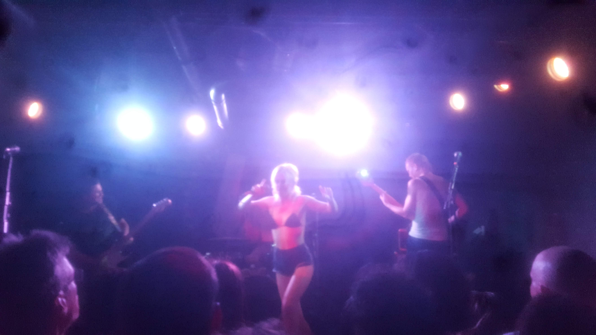

Culture
Big Bill | Gap Year
29/8/19
Big Bill has supplied us with a steady drip of singles since 2017's Toast, so i was glad to receive all new tracks on this project. Clocking nineteen minutes, it calls into question the public's attention span and the relevance of the album format. But with interlude and outro, it makes a play in that direction. Gap Year is a snapshot of a transitional period in someone's life. It seeks to convey a few ideas cogently in a short time, and uses hooks to accomplish this. There are no features and no added instrumentation on this project; it is a solitary venture.
Gap Year often juxtaposes and conflates the mundane and profound. Details of everyday life serve as synechdoche for the cosmic struggles of man. Big Bill takes us from "I bought hella houseplants" to "Find my way" without interstice.
—Lucas Magookas
Amyl and the Sniffers at U Street Music Hall
16/7/19

Amyl and the Sniffers delivered their mullet-clad fans a ripping punk show imbued with the fun, sexy confidence of cabaret. Between songs, Amyl shadowboxed and flexed her biceps, Schwarzenegger style. Watching her whip the air before the crowd with the mic's XLR cable, I had to wonder what their stage presence owes to the BDSM community.
Between songs, Amyl bantered incomprehensibly in her twangy Outback yelps.
Wrenching guitar riffs make the Sniffers notable; each track opened to waves of recognition and enthusiasm. They did not play my favorite song, Gacked On Anger, though. Or did they? From the ecstatic, inexhaustible pit, Amyl's lyrics got hard to parse and all the riffs sounded vaguely familiar.
—Lucas Magookas
XK Scenario at DC9
29/6/19

If you ever wanted to see Rage Against the Machine play a grimy bar, XK Scenario is for you. They wear their influences on their sleeves: the aforementioned Rage, Red Hot Chili Peppers, Bad Brains, et cetera. This was the most aggressive pit to which i have ever been a party.
—Lucas Magookas
Knife Wife and Boston Cream at Rhizome
27/6/19


How old are the Knife Wives?
Knife Wife's music is moody and simple—like school. Their music sounds a little rough around the edges, but as they go figuring stuff out, they are figuring out some cool stuff. They can pull off grungy solo vox, or they can sing in spooky unisons.
Their multi-instrumentalism promises flexibility and potential. Repetitive lyrics and repetitive licks, though, seem to subvert critics' longing for complexity.
But how old are the Knife Wives?
Boston Cream meshes jagged guitar riffs, smooth bass lines, and turbo drums into inviting grooves. Mel and Peach dance like wacky waving inflatable tube people.
—Lucas Magookas
Molly Tuttle at Pearl Street Warehouse
17/5/19

This was my first time attending a show at Pearl Street Warehouse. Neck-length haircuts were profuse on the ladies at this show. Unlike at rock or hip hop shows, Tuttle's banter made this feel relaxed and homely, as though we were at an impromptu jam in somebody's living room. She took time to tell us a cute little story involving Jewel (a country artist whose popularity peaked at the turn of the century).
Tuttle, at twenty-five, is immensely talented, yet unassuming. She plays a mean clawhammer—a technique that looks like it combines the Wooten double slap and finger picking on alternating downward and upward strums. When she started ripping out simultaneous bass lines and melodies at supersonic speeds, i could only shake my face around in ecstatic expression and exclaim "She is teaching class!"
Tuttle covers a wide range of Americana genres: blues jams, bluegrass ditties, and alternative singer-songwriter. She moves seamlessly from ballads to rippin' guitar solos. Her bandmate, sliding on a Telecaster®, often expands the atmosphere of the overall sound.
Tuttle's new album focuses more energy on songwriting and vocal performance. Though i certainly prefer the bluegrass tracks on which she takes the lead on guitar, i trust her still to deliver well with her pure voice.
—Lucas Magookas
Ex Hex, The Messthetics, and Clear Channel at 9:30 Club
10/5/19

Ex Hex is glam rock. You can tell because Wright plays a Gibson Flying V through Marshall stacks, because Harris slams the snare, and because all three are absolutely glamorous. (Timony plays a Koll.) And they shred. It all feels good, like hearing "The Boys Are Back In Town."
It is so vintage.
A stripped-down sound that allows guitar riffs to speak for themselves updates the sound for the twenty-teens. Their melodies seldom strayed far from the root; we take joy in simplicity.
The crowd was predominantly women. And the 9:30 club was nearly packed. Ex Hex's grooves held us persistently on the precipice over mosh.
This was my first time seeing The Messthetics live, and i like them. And thanks to a 9:30 employee, i snagged Canty's drumstick after the show.
—Lucas Magookas
MorMor and Duendita at the Songbyrd Café
16/4/19


Duendita groans like an eighteenth century galleon. She roars like a tiger. She makes her home in the low low (She's a bass!), but ensures you that she can hit the silky high notes when her voice pops up like a periscope out of water.
Her delivery overall, like a boxer, is confrontational. The rumble and tumble of SP-404 percussion keeps you off-kilter. Vocal uppercuts soften you, and sly beat drops knock you over. But she is equally respectful. The way she laughs between songs, you could begin to believe that perhaps she is your friend.
MorMor is touring with a full band, and it feels like a bit of a jam. Few bands escape their individuals' stylistic aspirations. The drummer smacked the snare with a street-funk sensibility while the other two leaned in and out of the mix. This show was really a team effort: most members pulled double-duty on instruments or mor. They had some sweet solos on the keyboard and guitar. Mr. Mor has assembled a talented band here and i am excited to see where the new material goes with a band in mind.
I could see the setlist from where i stood, which is, like, helpful, but ruins some of the fun.
MorMor takes the side of Al Green and Gallant in the great debate over falsetto in rhythm and blues. His voice, like that of an exotic bird, pierces through the lush foliage of augmented chords. We are not sure where that bird came from, but i hope it goes far.
MorMor closed his set with Heaven's Only Wishful. I pulled my earplugs out to let it pass through my skull. Shivers shaking my spine confirmed that i was in the place to which music sometimes takes you.
—Lucas Magookas
Buke and Gase at Comet Ping Pong
2/4/19

Buke and Gase's inscrutable percussion constructs are sometimes chonk chonky, sometimes nimble. We are never quite ready for those thunks. Over these Aron pours his throbbing Gase lines. Arone's Buke and voice create soaring walls of dissonance that scintillate like Archimedes' mirror ray of destruction.
You look at the homemade instruments and hear the vocal yodel, and at times it seems that Buke and Gase owe something to folk music. Are they singing the mountain songs of the chaotic urbane? Is this the sound of the collective cranium buzz that pervades our modern society? Merely to be awash in such cacophony feels rebellious. Surely this will repel the administration, or your parents, or your boss, or whoever.
—Lucas Magookas
Ivanka Vacuuming at Flashpoint
by Jennifer Rubell
10/2/19

The first thing i thought was "Wow, this vacuum is actually really annoying." I walked into the exhibit and met a feeling of overwhelming anxiety. I could not quite put my finger on the voyeuristic power dynamic setting me off-kilter but i knew that This is like, weird, man. I felt like i was standing in the execution theater, and it made me really nervous. It made me furrow my brow.
Some tactile investigation revealed that the inviting pile of schmutz consisted of dry breadcrumbs. Breadcrumbs? Breadcrumbs leave a trail... Aha! These are Mueller's breadcrumbs, made from corruption croutons. i have a thing for the Sisyphus story and Tibetan Buddhist sand art, so i sprinkled some breadcrumbs in a spot right after the Ivanka double vacuumed it. i hope she is having insights about impermanence. For my second toss, i tried to throw some to the back, to mix things up, but they only scattered widely. Crumbs are not particularly aerodynamic. i decided to rest on my laurels and stop at two tosses.
Ultimately, this piece accomplishes what it sets out to do. Nothing is more fragile than the image of somebody who has traded in their soul for a brand—that is, to become a brand. You might undermine her integrity with fine points on cable news, but good heavens, do not expose the Brand! The Brand is her livelihood. The Brand is unique. The Brand withers in ultraviolet light.
Fake Ivanka's eyes would occasionally flit up and meet mine. Is this part of the role of Ivanka? Or is this a betrayal of the piece? Why is she doing that? I think she really likes you, man. Find her after the performance and ask her, "So how do you spend the other 22 hours of the day?"
I wonder if she ever uses the detachable hose extension. Nobody is supposed to vacuum in high heels. Is she okay? Hmm. Blink twice if you need help, Ivanka double.
But then, i suppose the real Ivanka did the piece a huge favor by tweeting about it. Maybe that is her subtle congratulations, her blessing. The vacuum sounds louder now. You want to stay and fight to understand, but not at the expense of your night, nor your sanity. You look away, you walk on home. You leave Ivanka to her devices.
—Lucas Magookas
Poppy at 9:30 Club
31/1/19
Okay so. This is my second time seeing Poppy play live. Since the Poppy.Computer tour, they have reinvented themselves as a sort of black metal princess force for uncertainty. Madonna comparisons used to be apt; now she is more like, Marilyn Manson.
She was clearly not lip-syncing this time, which i like. This was evident in her struggles to hit the high notes on Pop Music. She also battled with Play Destroy's piped-in Grimes vocals—the bar trading and refrains are simply too rapid. Poppy debuted on stage actually playing a pale blue D'angelico. A pair of Marshall stacks flanked the center of the stage, a powerful device to anchor the show in rock and metal tradition. Certainly, the addition of live instrumentation helps bring the show out of the interweb and into the physical realm.
They played a lot of old tracks, even taking it back to Everybody Wants To Be Poppy, the first single she released as That Poppy. Still no Lowlife, though.
Their costumes appeared rather scruffy; I would think they could at least find better wigs. But i suppose they blew the budget on their eight- by twenty-foot light-emitting diode display and Marshall stacks.
This was a predominantly male audience. i find difficulty decoding the psychology of that. Poppy really needs to do something that makes me feel less concerned for her safety. Maybe her staking out of a posture as a non-binary feminist flag-bearer will help balance the fanbase. (The above observation is only my impression and this might vary between cities).
Poppy, Titanic Sinclair, and team have an undeniable knack for creating earworms. But i fear that the creative turns they took on Am I A Girl? will derail their satirical mimesis of pop music and multi-storied satire of creative influencer/superfan culture. Moreover, though, this looks and sounds like the music they enjoy making. I want them to be happy more than i want them to have an exhibit in the MoMA.
—Lucas Magookas
Mdou Moctar at Union Stage
9/1/19

Some have suggested that the Sahara-Sahel regional folk-rock genre faces oversaturation. Can Ali Farka Tourè, Toumani Diabaté, Fatoumata
Diawara, Tinariwen, Rokia Traore, Songhoy Blues, Imarhan, Noura Mint Seymali, and other North African musicians with international acclaim make room
for more to follow in their footsteps? At least some of the appeal of Kel Tamashek and Desert Groove is its relative inscrutability to Western ears.
It could, conceivably, mainstream itself out of novelty. Consider, alternatively, that these styles have transcended the critical mass of extremely
online obscurantists and landed a genuine fandom in the world. Congratulations, then, to the transnational Berber irregular polygon region on
promulgating an uncompromising cultural export the way Jamaica has done with reggae and Mongolia has done with Tuvan throat singing.
Mdou Moctar, for his part, showed signs of innovation. These desert groove artists are always playing a balancing act between their open adoration
of Jimi Hendrix and the traditions of their upbringing. Some may feel inclined to say "... but Moctar never strays far from his roots." But he does
stray; Moctar jams in recognizable ways. He personally looks up to Eddie Van Halen, and that comes through in his playing. Melodically, he does not
seem far off from acceptable norms in Western music. Probably because he grew up listening to classic rock. My companion leaned over and made the
observation that they sounded like Kansas. The band. We all find what we look for, i suppose. Moctar's shredded riffs, fed through a tube scream,
scorch over his rhythm players, who ground the performance in tradition. They took a linear route quite simple at its heart.
In Desert Groove, and in Moctar's live performances, the groove follows the kick drum. The snare offers syncopation. But i saw at least one baby
boomer clapping with the snare (the three and the three-and?). Oh and the drummer sped up on numerous occasions, so he either needed a click track
or this was an intentional effect to add to the sound's frenetic charge.
It sounded downright nasty.
Nasty?
Yeah, you know, like when you see guitarists screwing up their faces during a solo, or funk band leaders leaning nearly all the way over? Nasty.
They were playing nasty. Together with the rushing rhythm section, the performance evoked a Youtube video entitled Nasty But Every Time It Gets Nasty
It Gets Even Nastier.
—Lucas Magookas
TC Superstar, Palette, and Model Homes at ~dwell~
2/11/18
dwell possessed an extra-dank aroma today, which was noticeable from the bottom of the stairs. Summitting the stairs, i noted that drying
cannabis buds would provide tonight's backdrop.
Model Homes played.
But when TC Superstar pressed play on their SP, the space lit up. TC Superstar used energy beam in a most positive manner, and it was
super-effective. We had even pulled the tire swing out of the way. i do not care how important you think your job is. You need to dance to this band.
TC Superstar's lyrics treat the bleakness of the mundane with a bright glibness that disarms their heavy subtext. Unfortunately, songs began
to blend and blur together sonically, but that could indicate a cohesive album and artistic vision. It was a good sound anyway, so please reprise
it. And the project spills out of the confines of sound into physical art and stage performance. TC Superstar exudes something that says "art
installation" at least as much as "rock band."
Their standout track used the chorus to hop along a reference to the Toyota Corolla. (Ohhhhhhhhhhhhhh. The TC stands for Toyota Corollaaaa. Okay.)
Emily and Yuriko, dancers, toed the line between technical prowess and inviting people to ecstatic expressive freedom. At least one amateur
dancer in the room marveled at their balance, stamina, and flexibility. We also send props to Connor for sounding good while dancing without
lip-syncing, but more importantly, for wearing a WRGW tee.
Palette tied together the night with their subterranean spaced out vocal frenzy.
i had fun. i feel good. i feel warm.
—Lucas Magookas
Zula and Dove Lady at ~dwell~
19/10/18
dwell is a DIY venue in the Trinidad neighborhood of DC whose exact location is privileged information. Zula's show there felt cozy and warm
and nice. This despite their being from Brooklyn. Maybe i should not be so surprised that a DIY band felt at home in a DIY space.
Zula takes influence from many artists, but tries not to wear them on their sleeves. But they had one phrase that would have fit snugly
on Talking Heads' 1977. Their new material seems a little more Neutral Milk Hotel, a little less Lonerism. It is certainly more
verbose than the work they performed at Above the Bayou back in 2015.
It sounds like i have reservations about the direction they are taking. That sounds right. But Zula, in its new incarnation, retains the
essence of Zula that make it fresh and enjoyable. Keep surprising me, Zula. And keep playing shows in DC.
—Lucas Magookas
Tsushimamire at the Songbyrd Café
15/10/18
Tsuhimamire entered my life on trivia night at the Songbyrd Café. We slid into a fourth place finish while in the next room, people were
milling about the way they do in rooms too small to pace—with their heads down looking all around but at nobody. But the moment Tsushimamire
let out their warm-up noise, a crowd got in formation. i found myself perched on a step, which was uncomfortable; i longed for a pit.
They made me wonder what punk rock filtered in to Japan from across the ocean. Were Tsushimamire pulling Minor Threat EPs from the rack? How old are
they, exactly? Were Tsushimamire pulling Minor Threat CDs from the shelf back in the day? Maybe i am not giving Japan enough credit. The land of the
rising sun has a long and colorful music history of its own, so why would punk rock be an exception? Tsushimamire, for their part, blurred the line
between emulation and innovation. Truthfully, they employed more of the latter.
Tsushima's crunchy bass grooves kept every measure interesting. When the bass line followed the guitar, it was never the product of lazy songwriting,
but a calculated move to add weight to a phrase.
Takagi's percussion was energetic and tireless. Fills were subdued and sparse. Rather, Tsushimamire's drum section contributes urgency and amperage
with reliable thudding on the floor tom. The crashes were screwed in really tight though, which i thought was weird.
Kono affected her guitar leads with reverb that reminded me of basement jams. Which is kind of how the whole thing feels. Except that their jams do
not wander aimlessly. Every riff is that one tastiest of licks you get out of an hour's jam session.
Their fast ones ripped and their slower ones chunked hard. One guy asked me if they were Melt-Banana, which i suppose is fair. i try to make
everything a Powerpuff Girls thing, but face it, they were all Buttercup.
—Lucas Magookas